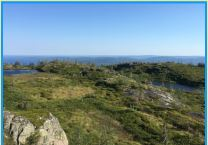

Национальный парк «Паанаярви»
Национальный парк «Паанаярви» (Paanajärven kansallispuisto) расположен в Лоухском районе Карелии – примерно в 59 км от поселка Пяозерский. Его просторы потрясающе живописны: еловые леса, многочисленные озера, мощные реки с бурными водопадами, горы и даже тундра. По парку проложены пешеходные маршруты для тех, кто готов погрузиться в удивительный мир карельской природы. Многие проводят здесь cвои отпуска: в парке есть специальные места для установки палаток, а также избы для проживания.
Национальный парк «Паанаярви»
Особо охраняемая территория парка «Паанаярви» была образована в 1992 году. Но история поселений в этой местности начинается гораздо раньше: считается, что первые племена жили здесь уже в 5-6 веках до нашей эры.
В качестве свидетельств первых поселений Паанаярви рассматриваются найденные в парке инструменты из камня и глиняная утварь. Древние жители этого региона занимались охотой, собирательством и ловили рыбу. Большинство поселений располагалось на берегах озер Пяозеро и Паанаярви: многие датируются еще каменным веком. Сегодня увидеть следы древних стоянок можно в Национальном музее в Хельсинки. А туристов ждут живописные берега озера Паанаярви, где оборудованы места под палатки. В период существования Новгородской республики территория входила в ее состав, а во второй половине 16 века перешла в собственность Королевства Швеция. Регион постепенно заселялся: ускорению процесса способствовал указ короля Карла XI (Karl XI), который освобождал от налогов всех переселенцев на 15 лет. К концу 18 века в Паанаярви обосновалось финское поселение. С 1809 года местность стала входить в состав Российской империи, согласно подписанному мирному договору между Россией и Швецией. Но в 1849 году озеро Паанаярви оказалось на финской территории из-за окончательного уточнения границ между государствами. После завершения советско-финской зимней войны в собственность СССР отошла большая часть Паанаярви. Национальный парк расположен у границы с Финляндией в северо-западной части Карелии, дальше уже начинается Северный полярный круг.
Известность Паанаярви среди путешественников начала расти еще на рубеже 19-20 веков. Район привлекал сосредоточением множества природных красот: гор, рек, озер, водопадов, лесных массивов, тундровых ландшафтов. С каждым годом популярность местных достопримечательностей возрастает. В современное время вход в национальный парк «Паанаярви» бесплатный и доступен всем желающим. Перед посещением парка нужно обязательно зарегистрироваться в визит-центре, который находится в поселке Пяозерский. По территории проложены удобные маршруты для тех, кто хочет взобраться на гору или полюбоваться водопадом. Можно забронировать палаточное место или избу: остановиться здесь на несколько дней и пожить в приближенных к дикой природе условиях. Территория парка «Паанаярви» обладает внушительными размерами: общая площадь составляет около 104 тысячи гектаров. Самыми знаменитыми достопримечательностями в парке являются: водопад Киваккакоски; гора Кивакка; озеро Паанаярви; гора Нуорунен. Помимо перечисленных, в Паанаярви много других природных объектов. Среди водных выделяются река Оланга (Olanga), на которой находится водопад Киваккакоски, а также реки Мянтюйоки (Mjantjujoki), Малнайоки (Malnajoki), Совайоки (Sovajoki) и другие. Кстати, на некоторых из перечисленных рек также есть водопады: особенно впечатляют Селькякоски (Selkjakoski) и Мянтюкоски (Mjantjukoski).